VPP2 深读：先把未来预测对，再把动作学好
Video Prediction Policy 2: Predict Better, Act Better · Yanjiang Guo 等 · arXiv:2610.10270v2 · 解读模式：explain
先看重点：VPP2 的关键是训练顺序和监督语义：完整事件让语言和未来对齐，固定时长让视频和动作对齐，单步蒸馏降低推理成本，再尽量保留视频先验地学习动作。最值得借鉴的是这条链，而不是把模型接上动作头之后的平均分。
1 核心思想一句话总结
先学完整操作的未来，再校准时长并接入动作，以受测任务的泛化收益检验这条路线。
2 论文背景与动机
一个看似简单、实际不确定的问题
桌上有两只杯子、三个盒子，指令只有“把杯子放进盒子”。究竟使用哪只手、拿哪只杯子、放到哪个盒子、从哪条路线接近？如果训练只给当前图像和很短的下一段动作，同一句话可能对应多种局部运动。模型即使拟合得很好，也可能学到“这个场景里通常向左移动”，而没有学会指令要求的完整操作。
VPP2 将问题拆成两部分：视频模型本身是否真正理解操作指令，以及动作训练会不会破坏已经获得的视频泛化能力。第一部分涉及数据切分和描述；第二部分涉及训练阶段、参数更新范围与视频—动作接口。它不是只把通用视频生成器换个输出头。
必要概念：先分清预测、规划和执行
世界—动作模型（WAM）：把环境未来变化的建模用于动作学习。这里的世界模型主要是条件视频预测器，能生成合理画面不等于物理上一定可执行。
视觉—语言—动作模型（VLA）：从图像、语言等条件预测动作的策略。VPP2 与若干具体 VLA 配方比较，结果不能外推为一整类架构的绝对优劣。
事件（event）：一次语义完整的子任务，比如拿起杯子并放进指定盒子，持续时间可变。片段（chunk）：按固定时间窗口取样的视频或动作；它可能只覆盖事件的一部分。完整性与时长固定是两个不同要求。
潜变量（latent）：把高维视频压缩后的数值表示。动作模块可以使用这种表示，不必先把整段未来解码成供人观看的 RGB 视频。逆动力学：从当前状态及期望后续变化反推动作；VPP2 用神经网络隐式学习这条映射。
零样本（zero-shot）：必须说明相对于什么未知因素。本文真实 ALOHA 实验没有目标任务专门微调，但使用的是训练见过的机器人形态；LIBERO 和 RoboDojo 的成绩则来自基准后训练，不能统一写成“零样本成功率”。
读懂核心假设：详细语言为什么要配完整事件
阅读任务｜图1：先看下半部分：简短描述对多种短期走向，详细描述对完整操作轨迹；上半部分仅作结果导航。
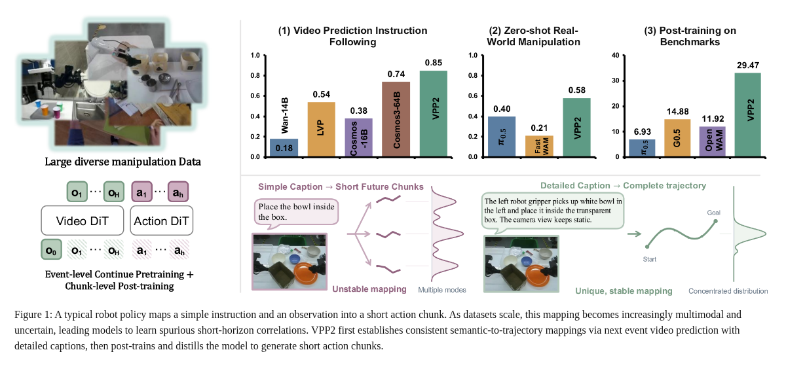
关键观察：示意图把目标、执行者和轨迹细节加入条件，试图缩小合理未来的范围；单纯增加数据，并不会自动消除监督中的歧义。
推理桥：这意味着作者希望先改善训练问题的可辨识程度，再扩大模型学习的覆盖面。条件更明确时，模型更有机会把语义差异映射到运动差异。
证据边界：图中“唯一稳定映射”是直觉示意，并非证明真实操作只有一条合法轨迹。概览右上基准后训练柱图标注 VPP2 为29.47，与RoboDojo正文表4的32.26不对应；部分基线标签/数值也不对应，图中未说明另一套汇总口径。本文性能解读采用正文主表，保留原图并明确这个内部不一致。 原文图1
旧做法到新做法：最小变化在哪里？
| 环节 | 容易出问题的做法 | VPP2 的处理 | 仍然付出的代价 |
|---|---|---|---|
| 视频监督 | 简短指令配任意短片段，片段不一定完成目标 | 详细描述配完整子任务事件 | 分段、标注和过滤成本 |
| 时间接口 | 事件快慢不同，但采样帧数相同 | 再学习固定物理时长的未来 | 多一个后训练阶段 |
| 生成速度 | 多次迭代才能得到未来表示 | 一致性蒸馏到单步生成 | 可能损失生成质量，需要验证 |
| 动作接入 | 新动作模块的梯度直接改变视频主干 | 早期冻结基础视频参数，仅用低秩适配 | 保护先验与适配新域之间存在权衡 |
这里有一个容易误读的反转：作者不是始终拒绝固定窗口。它在建立语义映射的预训练阶段优先使用事件，在对齐控制时间的后训练阶段主动采用固定窗口。§3
3 核心方法/模型详解
数据：覆盖哪些来源，比“看起来规模大”更具体
数据来源覆盖广，但总小时数未披露
阅读任务｜表1：按机器人、人类、通用视频三类看来源，再区分单臂、双臂和移动/人形；这张表不是数据量统计表。
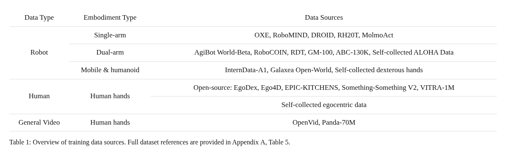
关键观察：数据包括 OXE、DROID、RH20T 等机器人来源，双臂及人形来源，人类第一视角数据，以及筛选过的 OpenVid、Panda-70M。论文称聚焦的第一视角双手/双臂类数据占总数据80%以上，并覆盖20多种机器人形态。
推理桥：这意味着视频预训练可以吸收缺少机器人控制标签的素材，而动作预训练需要进一步选择动作接口可对齐的样本；不能默认表内所有数据都同样进入每个训练阶段。
证据边界：正文与附录未给完整的总小时数、去重后事件数及每源混合比例，因此无法确认达到100k小时。数据集名称中的1M、130K或70M也不能换算成实际使用时长；80%的统计口径仍需更细数据清单。 原文表1
数据处理是在减少歧义，而不只是写长一点的 caption
阅读任务｜图2：先看上方首帧裁切和箭头指向的杯子、盒子，再看左下多视角拼图与右下描述。
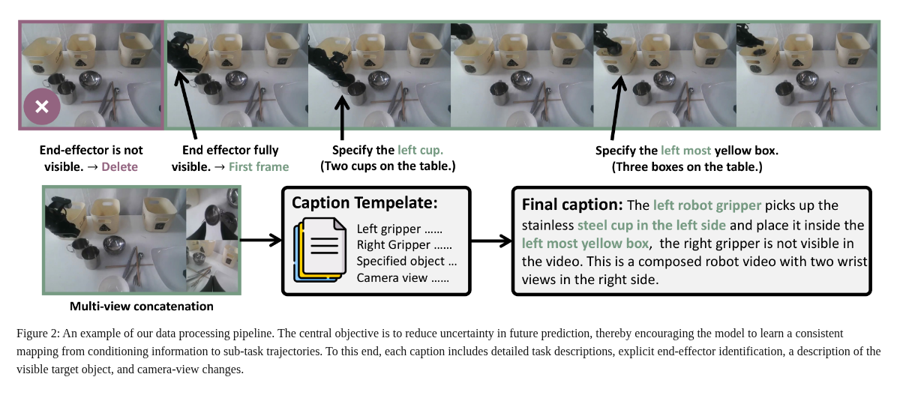
关键观察：末端执行器尚不可见的开头被剔除；描述明确左手、左侧杯子、最左盒子以及右手不可见。主视角放左侧，两路辅助视角上下堆叠在右侧。
推理桥：这意味着目标对象、执行身体和相机条件都成为训练条件。否则模型可能需要凭数据偏好猜“谁在动、动哪个物体”，而不是根据输入作预测。
证据边界：更详细的描述并不自动正确。若标注读取了完整视频，它必须在部署时由当前可见信息与任务计划合理提供，不能偷用实际未来；标签质量和推理时描述能力决定了这个接口是否可靠。 原文图2
具体处理流程是先排除相机损坏和突变轨迹，再依据手/末端速度低点、抓握开合等线索找到候选边界，将视频分成约1–12秒的语义片段。视觉语言模型（VLM，即能联合理解图像和文字的模型）进一步合并和调整边界，生成描述。目标物与活动末端要求出现在首帧；过大的相机运动通过光流过滤，较小运动则写入描述。缺少辅助视角的位置用黑图补齐。§2、附录A.1
本文分析：这相当于同时清理“时间边界噪声”和“条件歧义”。但筛掉难以看见目标或大幅转头的样本，也改变了训练分布；模型在遮挡、搜索目标和剧烈相机运动上的能力不能从这套处理流程直接推出。
坐标统一：同一个向左运动不能在不同数据里代表相反的动作
阅读任务｜图3：左图看机器人工作空间的盒子与世界坐标轴，右图看夹爪本地坐标轴的重定位。
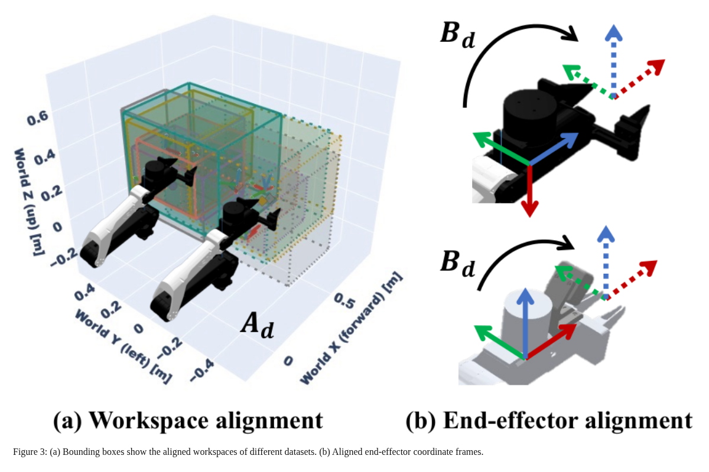
关键观察：数据对齐分成工作空间变换 A_d 与末端局部变换 B_d；二者分别作用于不同坐标接口。
推理桥：这意味着不只对动作数值做均值方差归一化，还要确保动作各维的几何含义相容。否则视觉上相似的运动可能对应冲突标签。
证据边界：几何坐标一致不等于动力学一致：夹爪形态、可达空间、控制频率、延迟和接触特性仍不同。该图也没有给出所有数据集的标定常数。 原文图3
对应的核心关系是附录式(6)：
T̃_d = A_d · T_d · B_d
T_d 是数据集 d 中原世界坐标到末端的位姿变换；A_d 把原世界坐标转换到统一世界坐标；B_d 将统一末端坐标映射到原末端坐标。它们属于 SE(3)，即三维旋转与平移组成的刚体变换，可用4×4齐次矩阵表达。按列向量约定，右侧的局部变换先作用，然后经过原位姿，最后到统一世界坐标；顺序不能交换。
最小数值例子：忽略旋转，假设原末端在世界中的 x 坐标为0.20米，工作空间平移+0.10米，局部工具原点沿 x 偏移+0.02米，那么对齐后为0.32米。加入旋转后，局部偏移必须随工具方向旋转，不能继续把每个轴的数字直接相加。这个例子解释乘法顺序，不代表论文实际标定参数。
三阶段训练：语义完整性、时间标尺、动作接口各管一件事
阅读任务｜图4：从左到右读事件预测、固定时长视频预测、短动作片段；再看右侧 attention mask 的有色格与空白格。
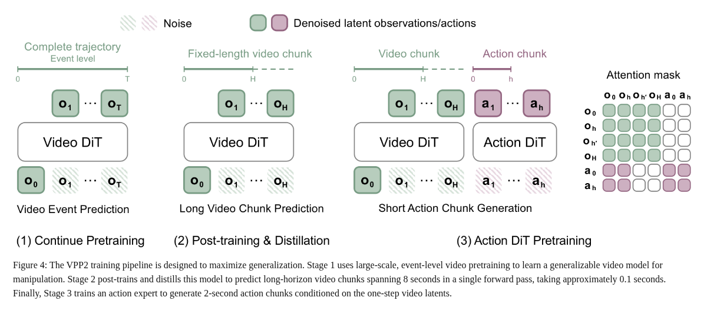
关键观察：视频先覆盖完整事件，再覆盖固定未来时长，最后为较短动作窗口提供条件。图中视频侧不读取动作列，动作行的可见视频范围也有专门限制，并非任意读取整个未来。
推理桥：这意味着预测器的角色是为动作学习提供有语义、有时序的环境表示。模型关注的信息范围由注意力掩码定义，不能仅凭“联合模型”一词推断所有 token 双向互看。
证据边界：这是主方法示意。公开的基准配方存在历史条件、动作规模和采样设置差别，后文单独核对；不能把图中的每个接口直接当作所有 checkpoint 的部署契约。 原文图4
最小例子：让左夹爪把左侧杯子放进最左盒子
以下流程是机制说明，不是新实验。起点是当前多视角画面和子任务指令。第一步让条件描述明确执行者和目标，得到“左夹爪抓住左侧杯子并放入最左盒子，视角固定”的语义约束。它不指定每个控制量，却减少了目标选择的歧义。
第二步在预训练中学习完整事件：从当前画面到杯子进入盒子。假设这次事件持续4秒，另一条轨迹持续8秒，两者都覆盖整个操作，但均匀采样同样多帧后，相邻预测帧代表的实际时间不同。这个阶段学的是“操作怎样完成”，还不能直接让同一帧索引对应同一个控制时刻。
第三步用固定时长窗口后训练，给视频帧建立稳定时间尺度。机器人视频预测窗口为8秒，人手为2秒；动作窗口在图4中是2秒。第四步用蒸馏后的视频模型快速产生未来表示，动作专家读取其允许访问的表示以及自身条件，输出短动作序列。真实执行后重新观测，再规划下一段；论文没有完整披露每次具体执行多少动作、何时重规划，不能自行补成某种控制频率。
阶段一：事件级继续预训练，为什么采用均匀抽帧？
基座为 Wan2.1-I2V-14B。I2V 指以图像为条件生成视频；DiT 是使用 Transformer 作为去噪网络的生成模型。对事件轨迹 τ=(o₀,…,o_T)，T 是终点帧索引，N 是未来帧数，不包含条件帧。式(1)按整个事件均匀选取：
y_event = (o₀, o_⌊T/N⌋, o_⌊2T/N⌋, …, o_T)
它让不同时长的任务都覆盖“开始到结束”，避免只看动作中途。代价是物理时间间隔随 T 改变。以30 fps、4秒事件为例，T=120；若用49帧序列即1帧条件加48帧未来理解，平均间隔为2.5个原始帧；8秒事件则为5个原始帧。此处把49解释为总序列长度是为了演示式(1)的 N 定义，具体实现仍应核对数据加载器。
视频编码器 E 将这些图像压成 x₁。流匹配（Flow Matching）让网络学习从噪声搬运到真实视频表示的方向；式(2)–(3)是：
x_s = (1 − s) ε + s x₁, ε ~ N(0, I), s ∈ [0,1]
L_FM = E[ ||vθ(x_s, s, c) − (x₁ − ε)||² ]
s 是生成过程的流时间，不是视频播放时间；c 包含初始观察与子任务指令。vθ 输出表示空间里的速度，目标 x₁−ε 是该直线路径的方向。最小标量例子取 x₁=2、ε=−1、s=0.4，则 x_s=0.2，目标速度为3。视频实际是高维潜变量，这个数值只解释损失的几何含义。
正文披露阶段一采用49帧、416×240分辨率、30,000优化步、batch size 1,024、学习率10⁻⁵。若1,024是全局 batch，二者相乘为30,720,000个样本呈现次数；这不是独立视频数量，更不是数据小时数，因为样本可反复出现。§3.1，式1–3
阶段二：固定时长负责校准时间，蒸馏负责减少迭代
式(4)把窗口长度设为 H 秒，原视频为 f fps，N 个未来采样点的间隔为 δ=fH/N 个原始帧：
y_chunk(t) = (o_t, o_(t+⌊δ⌋), …, o_(t+⌊Nδ⌋))
取 f=30、H=8、N=16，δ=15，即每0.5秒选一个未来点。若预测人手的 H=2，则在同样 N 下为每0.125秒一个点。改变固定 H 才能说明实际预测时长；仅报“17帧”无法说明机器人预测了多长未来。窗口超出事件末尾时，论文按终点限制索引。
随后进行一致性蒸馏。直觉是：从同一条生成轨迹上两个不同位置出发，应该指向相同的最终结果。式(5)比较学生在流时间 s 的终点预测，和更靠近数据端 s′ 的目标预测：
L_CD = E[ λ(s,s′) · ||Fθ(x_s,s,c)
− stopgrad(Fθ̄(x̂_s′,s′,c))||² ], s < s′
冻结教师将 x_s 沿流推进到 x̂_s′；θ̄ 是学生参数的指数滑动平均（EMA，用平滑后的参数提供更稳定目标）；stopgrad 表示目标一侧不通过这次误差反传更新。λ 是权重。边界 Fθ(x,1,c)=x 表示已经到数据端就保持原值。作者以0.5的概率选 s′=1，强化直接抵达终点的训练；推理从纯噪声调用 Fθ(ε,0,c)。
如果学生预测终点为1.7、目标为2.0且 λ=1，这个标量误差为0.09。关键是对齐终点，不是让两个流时间的中间状态相等。完整复现仍需要时间采样、教师积分器、EMA衰减等细节；正文公式本身不足以指定全部实现。
蒸馏的定性证据：少迭代后，操作过程是否还可辨认？
阅读任务｜图10：每个任务比较成对序列，带 after distillation 标记的一行是蒸馏后单步结果；横向看目标物变化而非只看清晰度。
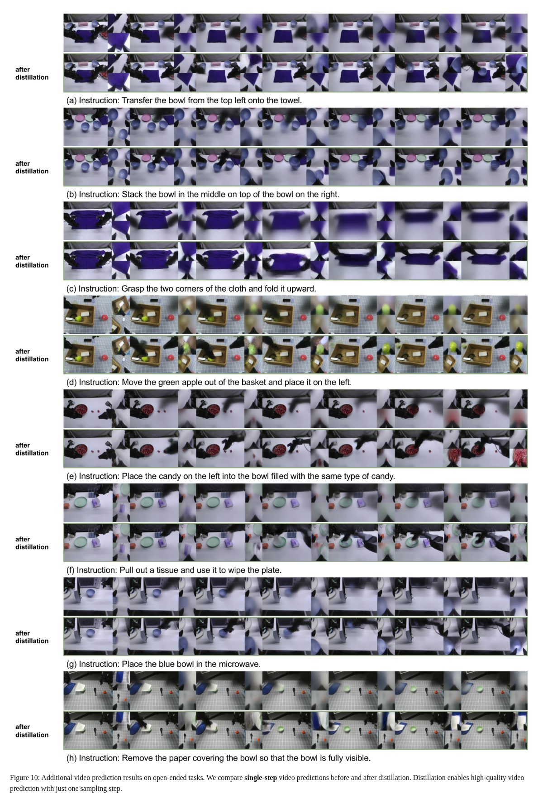
关键观察：示例覆盖移碗、叠碗、折布、移动苹果、分类糖果等。蒸馏后各行呈现更连贯可辨的操作变化，若干未蒸馏单步结果明显模糊。
推理桥：这意味着少步生成不能简单删掉迭代，专门训练一个单步映射有可见价值；固定时长与单步推理共同服务后续动作接口。
证据边界：这是选定样例的静态帧对比，不是全部视频逐帧审计，也不是蒸馏前后闭环成功率的严格消融。不能从图像更清晰直接推出动作更可靠。 原文图10
阶段三：用 MoT 学动作，为什么先保护视频主干？
MoT（Mixture-of-Transformers）在这里指视频与动作由不同 Transformer 专家处理并交换条件信息，不是稀疏路由的通用“专家混合”代名词。动作专家是正文描述的约0.9B参数 DiT，通过视频网络的 KV cache——注意力中的键和值表示——读取视觉信息，学习从当前条件与未来表示到动作的隐式逆动力学。
动作网络刚初始化时，梯度未必对应有用的操作规律。若立即让这些梯度大幅改变视频网络，可能把已经获得的预测泛化损坏。因此训练早期冻结视频基础参数，只通过 LoRA 适配。LoRA 是用低秩增量矩阵调整原有权重的方式，可降低可训练自由度；它并非理论上保证“不会遗忘”。正文也只说早期，不应写成视频网络全程冻结。§3.2
高层 VLM 的职责：决定下一件事，低层策略负责怎样做
长任务中，VLM 根据观察、反馈和记忆选择下一个子任务，并将其写成接近训练 caption 的详细描述。它解决的是目标分解与条件表达，VPP2 负责将明确子任务映射到运动。这种分层让角色更清晰，却引入新的误差来源：计划错了，低层可能很准确地执行错误目标；计划文字不符合可见场景，也可能诱发视频“补出”不存在的物体。§3.3
速度、资源与代码：不要把不同配方拼成一个模型
论文主方法在17×416×240输入、bf16和 torch.compile 下报告视频约0.12秒、动作5次去噪约0.10秒，合计每动作 chunk 约0.22秒。bf16 是节省存储与计算的数值格式，torch.compile 尝试编译优化执行图。0.22秒对应约4.5次 chunk 计算/秒的串行倒数，不是机械臂控制频率，也不包含所有高层VLM、采集、通信和控制开销；正文这段没有明确给测试GPU型号。
公开代码是有价值的补充，但本文固定核对提交 a103a1e1784d3e45014549a82238894d3ed85959，不会将它当作 v2 正文的逐字实现：
| 项目 | 论文主方法叙述 | 本次核对的公开配方 |
|---|---|---|
| 视频演示 | 继续预训练与单步蒸馏 | 视频指南的 Stage-1/2 示例使用常规30步去噪；17帧不等于单步 |
| 动作模型 | 约0.9B动作专家 | LIBERO 文档称约1B；RoboDojo 使用 Action2B |
| 视觉条件 | 主图围绕当前观测与未来 | RoboDojo 加入历史帧，从蒸馏前 Stage-2 出发适配 |
| 视频参数更新 | 动作训练早期冻结基础参数、使用LoRA | RoboDojo 联合配置中 LoRA 关闭，并设置视频与动作的独立学习率 |
| 名称中的100k | 论文未据此声明数据小时数 | RoboDojo 的100k指100,000训练步，不是100k小时 |
官方 RoboDojo 文档给出一个历史条件视频阶段：全局 batch 832、10k步、学习率5×10⁻⁶；联合 Video+Action2B 阶段为全局 batch 288、100k步，视频学习率5×10⁻⁶、动作/本体模块10⁻⁴。bf16、DeepSpeed ZeRO-1 和梯度检查点用于控制训练开销：ZeRO-1 分摊优化器状态，梯度检查点以重复计算换激活内存。它们是复现入口中的配置，不是对主预训练 GPU 时长、成本或吞吐的完整披露。
历史视频窗口包含首帧、七个过去观察、当前帧和十六个未来帧。把历史加入条件，才有机会处理“当前画面相似但之前发生过不同事件”的任务。因此后面看到记忆维度成绩较高时，不能全部解释为无历史单帧模型的能力。
官方视频推理指南 · RoboDojo 配方 · 联合配置 · LIBERO 配方
以上仅为代码与文档核对，本次没有运行模型、下载大权重或启动 GPU 训练。
4 实验与结果分析
先建立证据阶梯，再读平均分
| 层次 | 测的是什么 | 能支持什么 | 不能混成什么 |
|---|---|---|---|
| 视频预测 | 生成视频是否按指令完成操作 | 视觉运动与语言对齐 | 真实机器人执行成功 |
| 真实 ALOHA | 已见机器人形态上的目标任务零样本 | 特定真实设置的任务迁移 | 任意新机器人零样本 |
| LIBERO | 标准任务后训练后的分布外表现 | 扰动与组合泛化 | 无基准训练的直接部署 |
| RoboDojo | 42项双臂仿真任务的后训练表现 | 多维能力的综合成绩 | 全部能力都同样强 |
| 高层规划 | 五类选定任务上的分层系统 | 规划与子任务条件的组合收益 | 纯粹替换一个推理提示的独立效果 |
总体上，论文提供了有力的受测表现，但对“每项设计分别贡献多少”的因果解释仍是中等支持。尤其详细 caption、事件切分、参数保护、数据规模和高层规划不能仅凭最终平均成绩全部单独归因。
视频质量：11个百分点是如何算出来的？
阅读任务｜表2：按 Human、Robot 两列读指令遵循成功率；比较 VPP2、64B基线和固定窗口消融，不把这个指标当作机器人闭环成功率。
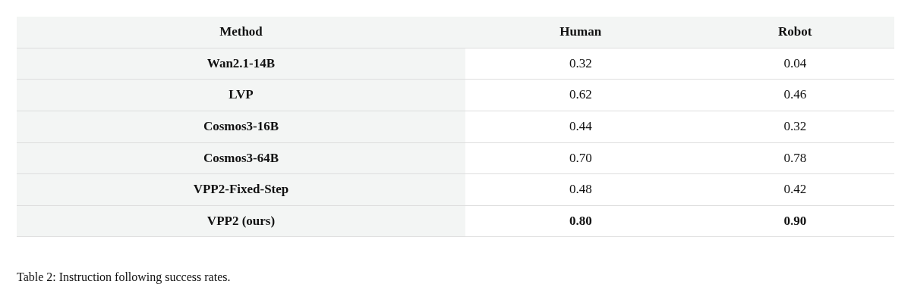
关键观察：每类50组图像—指令，GPT评估器给 VPP2 为80%/90%，Cosmos3-64B为70%/78%。两类等量合并为85%对74%，差11个百分点。固定窗口消融为48%/42%。
推理桥：这意味着操作领域适配与事件监督在该测试上优于单纯更大参数量，也支持事件级目标对语义一致性的价值。85/74−1约14.9%才是相对提升，不能与11个百分点混用。
证据边界：自动裁判存在判断偏差，每类仅50个条件；未给充分的重复生成、统计区间与所有标注细节。Fixed-Step支持训练目标差异，但不能独立量化caption质量、数据组成和参数保护各自的贡献。 原文表2
人类偏好：赢、平、输必须一起看
阅读任务｜图6：每行是一个基线；左侧人手、右侧机器人；绿色为VPP2胜、灰色平局、紫色基线胜。
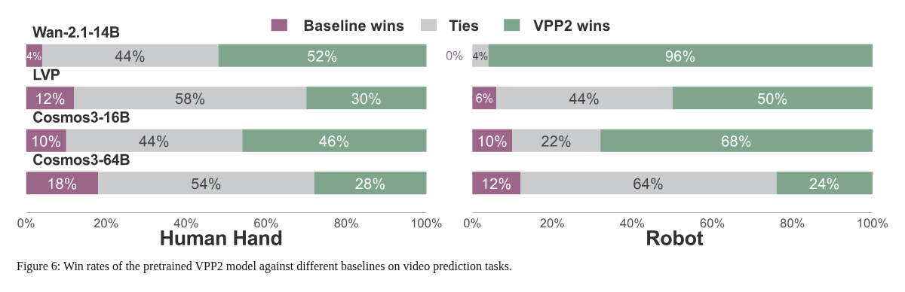
关键观察：对64B基线，人手为28%胜、54%平、18%负；机器人为24%胜、64%平、12%负。对较弱的Wan基座优势更明显，机器人侧达到96%胜。
推理桥：这意味着人工评估支持优势方向，但与强基线的比较更接近“平局占多数、净胜更多”，而不是每个样本都明显更好。
证据边界：胜率图不是表2的二元任务成功率，不能把平局全部算为赢；人评流程的盲化、一致性与置信区间仍影响判断强度。 原文图6
定性例子：难点在指代和空间关系，而不只是画面逼真
阅读任务｜图7：逐行比较同一指令下三种模型，注意“最左”目标与相对放置位置；绿色圈和红色圈是作者标记。
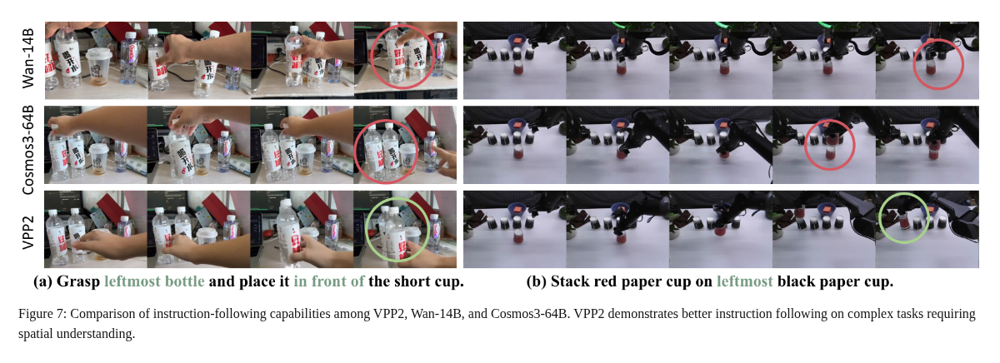
关键观察：示例要求选择指定瓶子或将红杯叠在最左黑杯上。VPP2展示的结果更贴合被指代对象与空间关系，其他结果可能运动合理却操作对象错误。
推理桥：这意味着视觉生成评价必须问“动对了什么”，而不是只看动作有没有发生；该例解释了详细对象描述为什么可能重要。
证据边界：这是作者选择的少量样例，不能单独证明总体成功率，也不能排除生成视频内部的接触或几何不一致。 原文图7
真实 ALOHA：平均更好，但折叠任务仍然落后
阅读任务｜图8：横轴是十类任务，纵轴成功率；先看平均，再看 Fold 和 Pour，避免忽略强弱项。
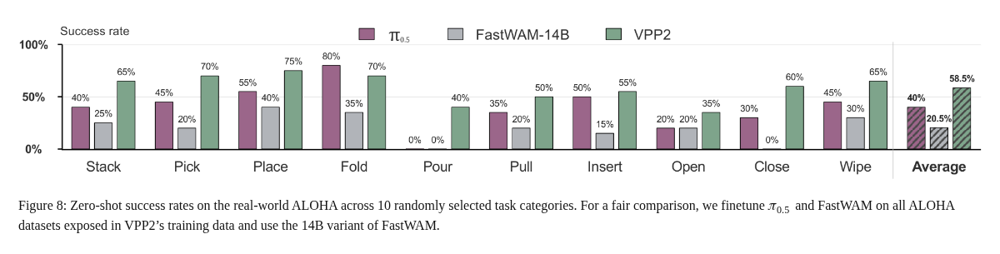
关键观察：平均58.5%，对比π₀.₅的40.0%和FastWAM-14B的20.5%；九类领先，但Fold为70%，低于π₀.₅的80%。Pour上两基线为0，VPP2为40%。
推理桥：这意味着视频预测路线有真实执行层面的支持，而不是只在生成质量上得分高；类别差异也提示不同技能对建模方式的收益不同。
证据边界：零样本指没有目标任务专门微调，机器人形态训练时已见。图注明确基线接触相同ALOHA训练数据，但整个基座预训练和训练预算并非因此完全相同；正文缺少完整试验数与误差条，58.5%也远未等于稳定完成任意任务。 原文图8
LIBERO：接近满分的标准测试，掩盖了多大泛化差距？
阅读任务｜表3：先比较ID总体，再读Pro的位置/任务扰动与OOD的空间/物体/目标重组；横向破折号表示未报告，不是零分。
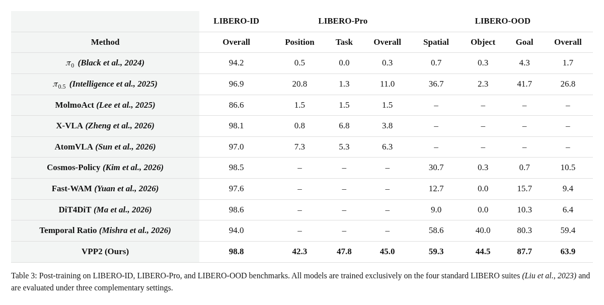
关键观察：VPP2在ID为98.8%，Pro为45.0%，OOD为63.9%。Temporal Ratio的OOD为59.4%，与VPP2差4.5个百分点；多个其他视频策略虽然ID高，却在OOD明显下降。
推理桥：这意味着“有视频生成主干”并不足以保证泛化，如何训练语义—轨迹映射很可能比是否属于WAM更关键。强基线Temporal Ratio也说明不能只挑最低分方法展示倍率。
证据边界：这里的“只在标准四套LIBERO训练”指基准适配阶段，不代表所有模型从零开始、没有通用预训练。基线来自不同论文与协议来源，统计重复和资源预算仍需核对；ID上0.2个百分点差距不宜被夸大。 原文表3
官方 LIBERO 复现文档为这些成绩提供了更具体的计数：ID 为1976/2000，修改版OOD为2877/4500，Pro为360/800；对应98.80%、63.93%、45.00%。这些是该提交的协议说明，阅读时应一并检查初始状态、随机种子和任务改造，不能把不同“OOD”实现的分数直接并列。附录表6进一步给出ID各套任务，本文不把它重复当成独立泛化证据。
RoboDojo 总成绩：分数和成功率是两个量
阅读任务｜表4：看两行：Avg. Score允许部分任务进展，Success Rate要求完成；这张表没有开启后面的子任务规划。
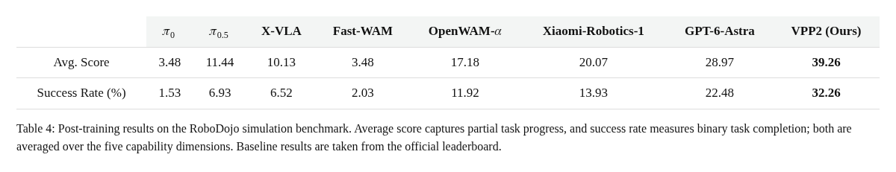
关键观察：VPP2平均得分39.26、成功率32.26%。正文报告的最强表列基线为28.97/22.48；相应差值为10.29分和9.78个百分点。
推理桥：这意味着对任务进展和完整完成两种标准，VPP2都呈现改善；后训练后的真实能力仍需要逐维拆开，不能只用排名替代分析。
证据边界：基线引用的是论文所述2026年9月榜单快照，本文未重新认证实时排名。不同系统可能带有不同历史条件、模型预算和工程实现；这是仿真基准后训练结果，不是ALOHA零样本成绩。 原文表4
RoboDojo 分项得分：不能把泛化的两个子列重复计权
阅读任务｜表7：看表头：Generalization含Std.与Rand.两列，其他四维各一列；VPP2的泛化格合并了两种设置。
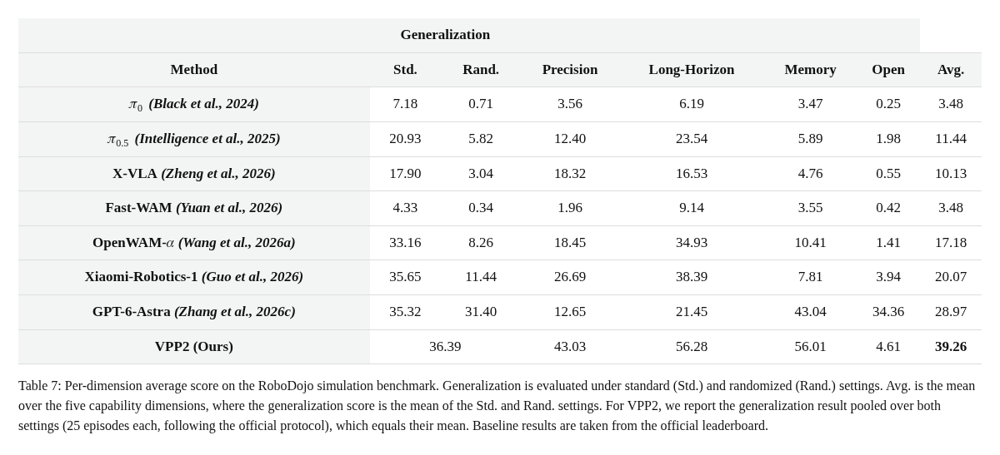
关键观察：VPP2的五维得分为36.39、43.03、56.28、56.01、4.61；最后一项Open明显偏低。基线先将Std./Rand.平均，再与其余四维等权平均。
推理桥：这意味着39.26不是表面六个栏位的简单均值；正确权重是五种能力各一份。VPP2的总体优势主要伴随精细控制、长程和记忆上的较高得分，开放指令仍是短板。
证据边界：得分衡量部分进展，不等于完成率。合并泛化格不能还原VPP2在Std.与Rand.各自的成绩，也不能据其均值声称随机化没有影响。 原文表7
RoboDojo 分项成功率：Open 仅4.08%，是值得记住的限制
阅读任务｜表8：使用与表7相同的五维对应关系，特别看Memory与Open，避免因合并单元格错位读数。
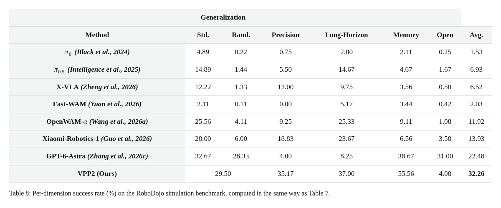
关键观察：VPP2的泛化、精度、长程、记忆、开放指令完成率分别为29.50%、35.17%、37.00%、55.56%、4.08%；平均32.26%。对比表中的GPT-6-Astra，Open仍明显低于31.00%。
推理桥：这意味着模型对低层操作、历史信息和新任务语义的能力并不均衡。记忆高分与带历史条件的公开配方相容，Open低分说明“视频预测泛化”不自动解决开放语言任务。
证据边界：不能把最后的4.08错读为Memory，也不能把均值领先扩张成五个维度都领先。表内名称和结果是作者记录，本文没有独立复跑这些系统。 原文表8
高层规划：平均提高30个百分点，但不是纯推理时开关
阅读任务｜图9：看五类任务与最右平均；该图每任务50次，平均只针对这五类，不是42任务总平均。
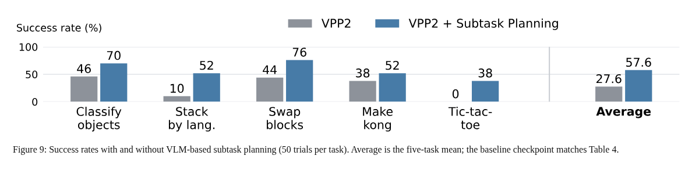
关键观察：基线均值27.6%，规划配置57.6%；语言堆叠10%→52%，井字棋0%→38%。其余三类也有改善。
推理桥：这意味着将复杂任务分解成明确子任务能补足低层策略的目标选择与长期组织能力，与Open维度暴露的问题形成呼应。
证据边界：作者为子任务条件策略重新切分示教并配对子任务指令，因此比较混合了训练条件变化与推理时规划，不能声称“同一低层模型只加一个提示就提高30个百分点”。选定五类结果也不能外推到全基准。 原文图9
最强证据与最薄弱归因
较强的直接证据是特定评估设置下的性能差异：视频指令遵循、ALOHA分类任务与LIBERO分布外测试形成了从预测到控制的多层验证。中等支持的是事件级训练对泛化的价值，固定窗口消融提供了方向性证据，但没有隔离全部数据与优化因素。
较弱的归因是把所有提升都解释为详细caption或LoRA保护：正文没有覆盖二者独立开关、与数据量/计算量严格对齐的完整消融。不支持的外推包括“任意机器人可零样本执行”“数据已达100k小时”“公开示例已复现0.22秒单步策略”或“平均领先就等于开放指令能力领先”。
5 论文的贡献与影响
贡献应该落到可复用的训练原则
第一，语言与监督时间跨度应匹配。如果标签描述完整事件，而目标只给几帧中间运动，训练信号可能天然多义。事件级预训练提供了一种减少这种不匹配的办法。
第二，语义学习与控制时钟可以分阶段解决。先学习完整行为，再固定时长，并不矛盾；两者优化的接口不同。这给数据管线设计一个实用问题：当前模型学不好，是网络不够强，还是任务标签与窗口根本不一致？
第三，把泛化能力保留下来本身是动作学习的目标。视频主干并非越早全量更新越好，但保护策略是否有效仍需测量。复现时应同时跟踪视频指令遵循与动作闭环表现，防止动作训练损坏前者却暂时未在训练域暴露。
对训练与数据工作的启发：先做可检验的小实验
| 可检验问题 | 最小验证 | 能区分什么 |
|---|---|---|
| 完整事件是否比固定短窗更利于语义对齐？ | 固定数据源与训练预算，仅改变目标时间范围 | 事件监督的独立效果 |
| 详细描述是否有用，还是只是多了文本？ | 简短/完整描述交叉事件/固定窗的2×2实验 | caption与时间范围的主效应及交互 |
| 动作训练是否损坏视频泛化？ | 相同动作数据下比较冻结、LoRA、全量更新，持续测视频留出集 | 参数更新范围与遗忘的关系 |
| 单步速度是否值得质量代价？ | 对齐初始条件和随机种子，比较蒸馏前后视频质量及闭环成功 | 感知质量与实际控制收益是否一致 |
| 高层规划收益来自哪里？ | 对齐低层训练数据，分别关闭计划选择与描述增强 | 训练改变、任务分解、提示细化各自贡献 |
这些是本文提出的后续实验，并非已执行结果。若重点是速度，先拆分视频编码、视频网络、动作去噪、VLM、通信与控制时延；不要把0.22秒作为没有硬件和配置条件的通用指标。
复现优先级与已知缺口
第一步先选清目标：验证视频泛化、复现LIBERO，还是复现RoboDojo。三者的权重、输入历史和动作规格不同。先核对checkpoint与编码器、归一化文件是否配套，再检查视角拼接、坐标系和动作维数；仅“能加载权重”不表示数据契约正确。
第二步把动作误差与闭环成功率分开。一个动作序列接近示教，可能在新观测分布下失效；成功率提高，也可能来自不同高层规划或任务分解，而不是低层网络本身。
仍未从指定正文得到的关键事实包括：全量数据时长与重复率、各来源采样比例、完整预训练硬件与GPU时成本、每项训练设计的独立消融，以及主方法低延迟测量的完整硬件条件。公开后训练代码补足了部分复现细节，但不能倒推出这些未披露项。
6 结论
最终判断：值得精读，也值得做有边界的复现。 VPP2 最重要的启发是把“明确地预测完整操作”和“按固定时间输出控制”拆成不同训练阶段，再通过快速视觉表示与动作专家连接。真实与仿真实验支持这条路线的潜力，但开放指令短板、统计细节和公开配方差异限制了更广泛结论。
只记住三个问题：训练指令和监督窗口是否讲同一件事？动作学习是否保留了预测泛化？当前引用的成绩、时延和代码是否属于同一套配方？把这三个问题问清楚，比只记住一个平均成功率更有用。
来源与核验范围
- 论文 HTML v2 与 同版本 PDF：主要事实依据；按原文图表号、章节和式号定位。
-
作者项目页：关联资源入口，不作为实时排行榜认证。
-
官方代码固定提交：仅辅助核对公开配方，检查日期为2026-11-02；未运行训练或推理。
本文覆盖18个编号图表的清单，其中15个作为关键证据嵌入并解读。图5为跨形态样例画廊，未作逐帧视频审核；表5补充表1的数据来源引用；表6细分已在表3讨论的ID结果，这三项保留来源记录但不重复展开。图表来自作者原文，表格以原HTML结构重新排版截图，数值与合并单元格保留。PDF自动清单中的重复标题和误识别已人工校正。
本页是中文研究解读。机制解释与最小数值例子用于帮助理解；事实以指定版本论文为准，代码补充与本文推断已分开标注。返回观行主页或阅读Dyna-2 深读。